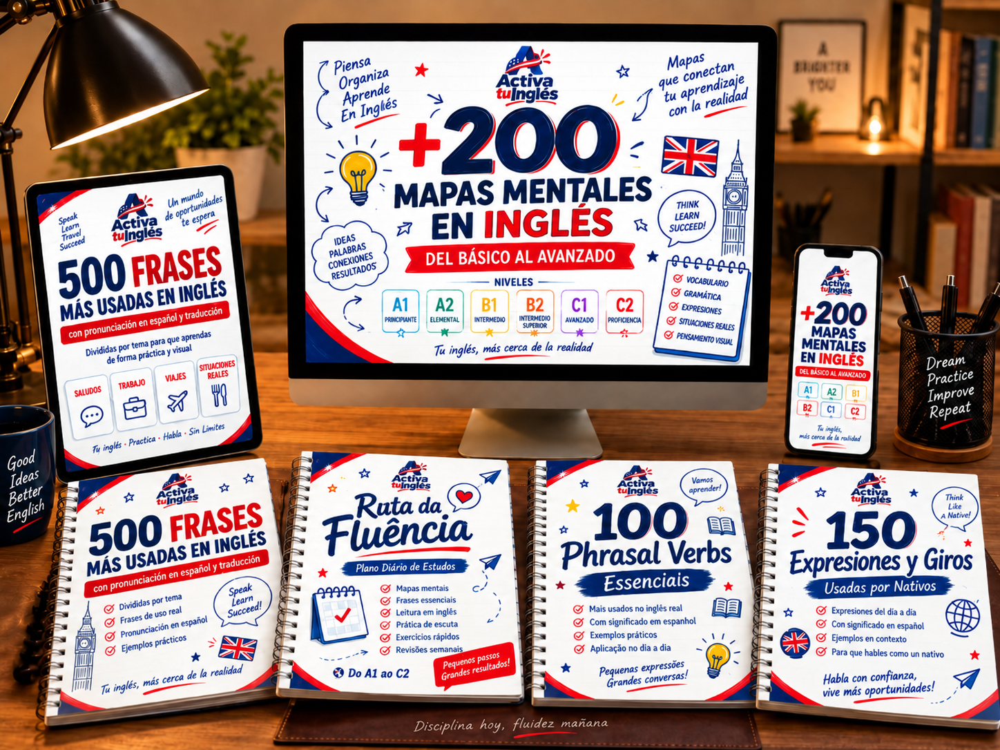
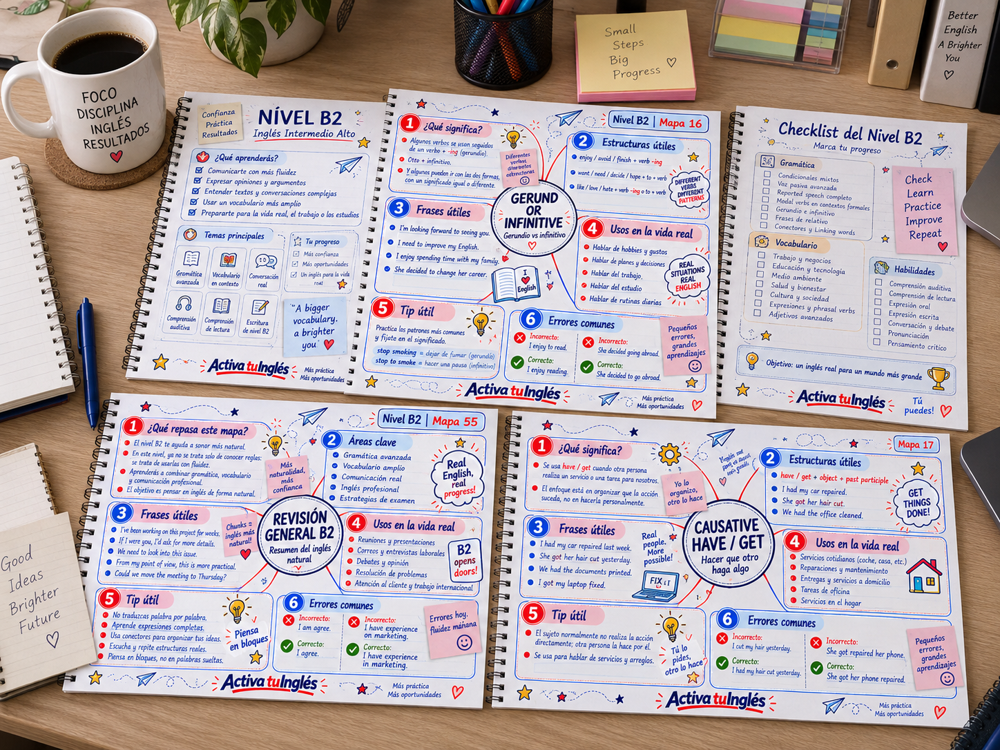
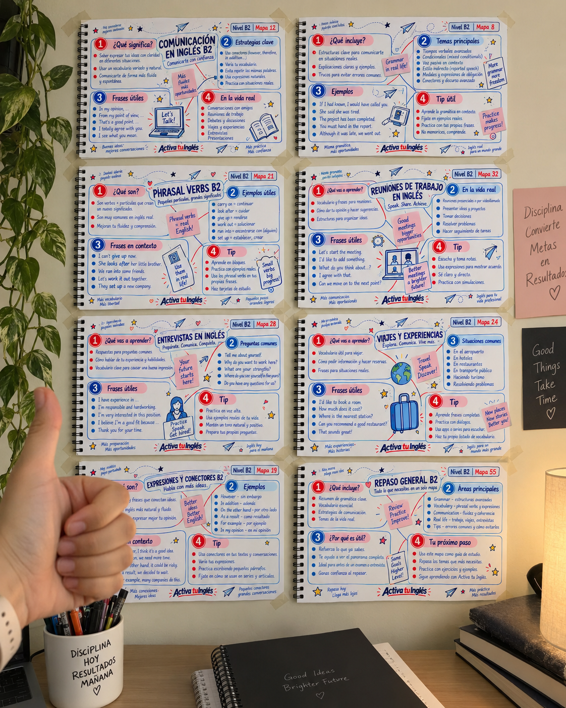
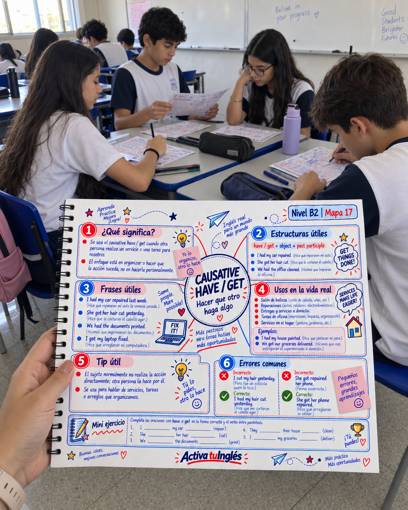
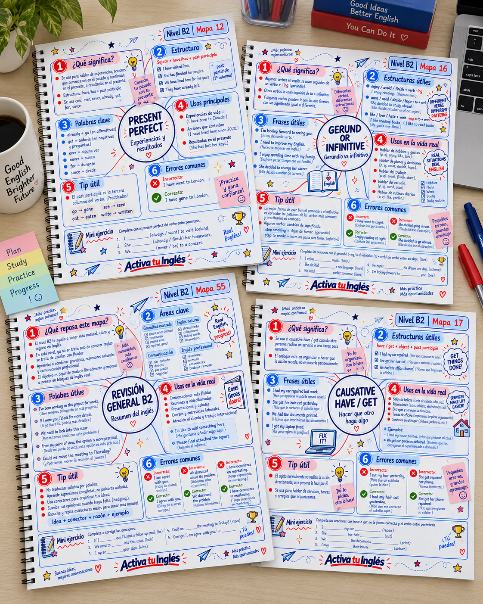
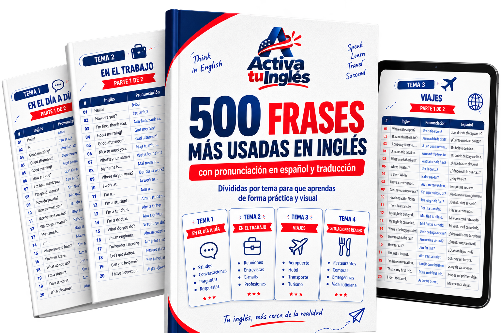
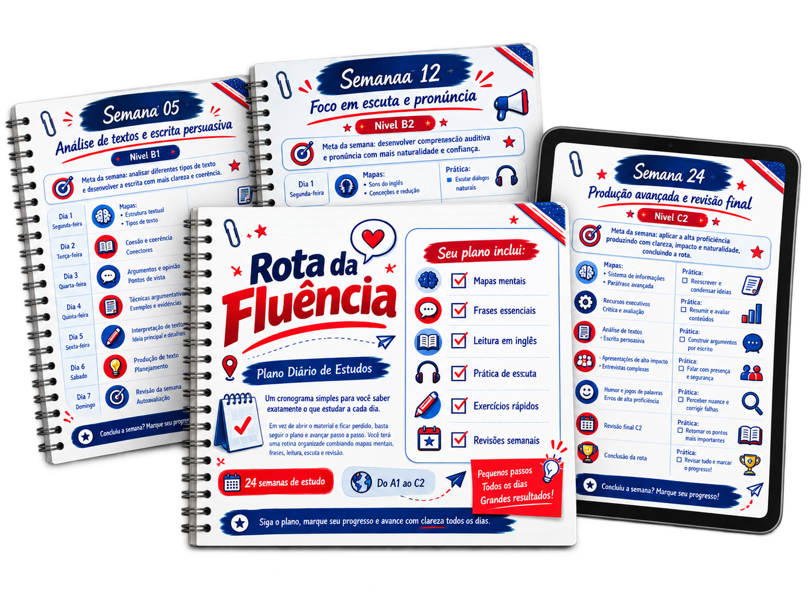
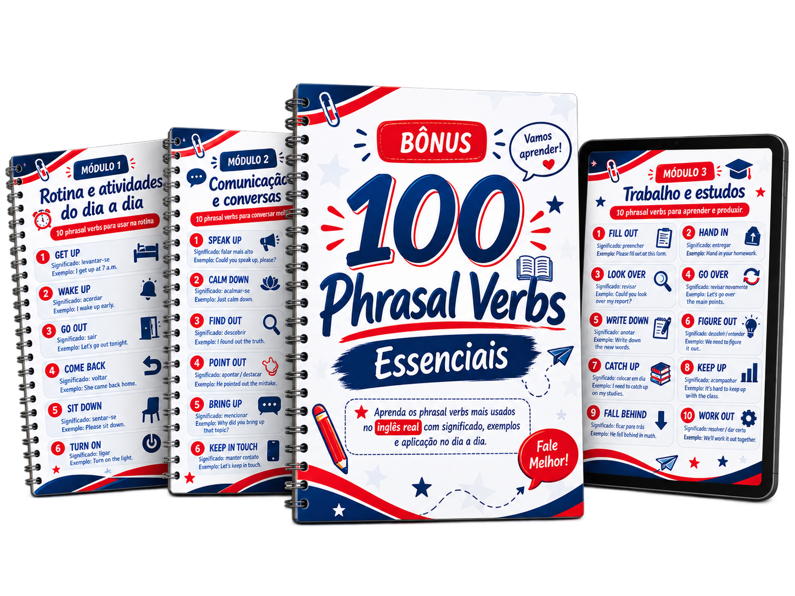
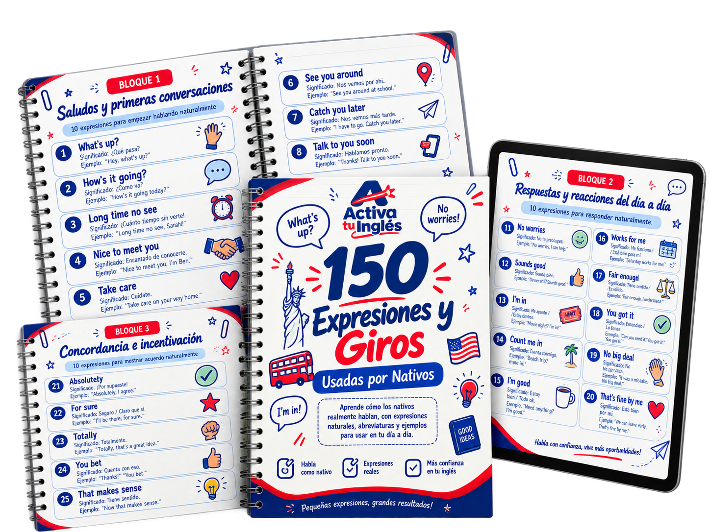

Entiende y habla inglés en 15 minutos al día — con un sistema visual, aunque ya lo hayas abandonado mil veces.
Una colección de mapas mentales ilustrados que conectan vocabulario, gramática, pronunciación y conversación en un solo sistema visual — pensado para hispanohablantes de toda Latinoamérica.
Sí, quiero mi acceso hoyAcceso inmediato · Garantía de 7 días · Pago único de $7,99 USD

¿Te suena familiar?
- Empezaste inglés en apps, YouTube y cursos… y siempre lo dejaste a la mitad.
- Estudiaste años, pero cuando un extranjero te habla, la mente se queda en blanco.
- Sabes reglas de gramática de memoria, pero no logras armar una frase real.
- Tienes mil PDFs y videos guardados que nunca terminas de ver.
El problema no eres tú. Es el método. Aprendiste inglés como se estudia para un examen — no como el cerebro realmente aprende un idioma: por asociación visual.
¿Por qué un mapa mental y no otro curso?
Tu cerebro no memoriza listas — memoriza conexiones e imágenes. Un mapa mental agrupa el inglés por bloques visuales, así que en vez de estudiar 300 páginas sueltas, ves todo el idioma en una sola imagen y tu memoria lo retiene sin esfuerzo.
Es la diferencia entre intentar recordar un número de teléfono suelto… y recordar la letra de tu canción favorita. Lo visual se queda. Lo aburrido se olvida.
Así se ven tus mapas mentales
Mapas ilustrados y organizados para facilitar tus estudios y repasos rápidos.
Estudiantes que ya lo están usando
Historias reales de personas en toda Latinoamérica aprendiendo inglés con los mapas mentales.

Siempre me perdía entre tantos cursos. El sistema de mapas me mostró exactamente qué estudiar cada semana. En un mes ya entendía videos sin subtítulos.

Lo uso 15 minutos por día antes de trabajar. Es tan simple que por fin no abandoné un método de inglés.

Me ayudó muchísimo para mi entrevista de trabajo en inglés. El mapa deja clarísimo qué aprender primero.

Es el primer método que realmente pude seguir de principio a fin. Ahora entiendo canciones y series sin traducir todo.
Qué vas a encontrar en tus mapas
Todo organizado por bloques visuales, dentro de una colección A1 → C2.
+300 mapas mentales · 6 niveles · de cero a dominio
Nivel A1 — Fundación del Inglés
Objetivo: Enseñar al alumno a reconocer palabras esenciales, armar frases cortas, hacer preguntas básicas y comunicarse en situaciones simples.
Fundamentos
- Alfabeto en inglés
- Deletreo
- Pronunciación de las letras
- Números del 0 al 20
- Números del 20 al 100
- Números grandes
- Días de la semana
- Meses del año
- Fechas
- Horas
- Colores
- Símbolos y señales comunes
Estructuras esenciales
- Pronombres personales
- Pronombres objeto
- Adjetivos posesivos
- Pronombres posesivos
- Verbo To Be: afirmativo
- Verbo To Be: negativo
- Verbo To Be: preguntas
- Contracciones con To Be
- Artículos A, An y The
- Singular y plural
- This, That, These y Those
- There Is y There Are
Vocabulario básico
- Familia
- Personas
- Profesiones
- Países
- Nacionalidades
- Partes de la casa
- Objetos de la casa
- Objetos personales
- Comidas
- Bebidas
- Frutas
- Animales
- Partes del cuerpo
- Ropa
- Clima
- Emociones
- Adjetivos básicos
- Verbos esenciales
Comunicación
- Saludos
- Presentaciones personales
- Preguntas con What, Where, Who y How
- Frases con I Am
- Frases con You Are
- Frases con He, She, We y They
- Frases de supervivencia
- Repaso general A1
Nivel A2 — Construcción de Frases
Objetivo: Ayudar al alumno a hablar sobre su rutina, preferencias, habilidades, pasado básico y planes.
Presente y rutina
- Simple Present: usos
- Simple Present: afirmativo
- Simple Present: negativo
- Simple Present: preguntas
- Do y Does
- Don’t y Doesn’t
- Tercera persona con S
- Adverbios de frecuencia
- Rutina de la mañana
- Rutina de trabajo y estudio
- Rutina de la noche
- Hábitos semanales
Verbos y estructuras
- Have y Has
- Like, Love y Hate
- Want y Need
- Can y Can’t
- Habilidades
- Pedidos con Can
- Imperativo
- Let’s
- Some y Any
- Much y Many
- A Lot Of
- How Much y How Many
- Sustantivos contables e incontables
- Preposiciones de lugar
- Preposiciones de tiempo
- In, On y At
Pasado y futuro inicial
- Simple Past con To Be
- Was y Were
- Verbos regulares en pasado
- Verbos irregulares básicos
- Did y Didn’t
- Preguntas en pasado
- Going To
- Planes futuros
- Will para decisiones simples
Vocabulario y situaciones
- Lugares de la ciudad
- Direcciones
- Medios de transporte
- Compras
- Precios y dinero
- Restaurante
- Hotel
- Aeropuerto
- Salud básica
- Farmacia
- Hobbies
- Deportes
- Música y películas
Comunicación práctica
- Hacer invitaciones
- Aceptar y rechazar invitaciones
- Pedir información
- Mini conversaciones A2
- Repaso general A2
Nivel B1 — Inglés Independiente
Objetivo: Permitir que el alumno converse sobre experiencias, acontecimientos, opiniones, planes y problemas cotidianos.
Tiempos verbales
- Repaso del Simple Present
- Repaso del Simple Past
- Present Continuous
- Past Continuous
- Simple Past x Past Continuous
- Present Perfect: introducción
- Have You Ever
- Ever y Never
- Already y Yet
- Since y For
- Present Perfect x Simple Past
- Going To x Will
- Present Continuous para el futuro
- Future Time Expressions
Estructuras intermedias
- Comparativos
- Superlativos
- As…As
- Too y Enough
- Should y Shouldn’t
- Must y Mustn’t
- Have To y Don’t Have To
- May y Might
- First Conditional
- Zero Conditional
- Relative Pronouns
- Who, Which y That
- Gerundio después de verbos
- Infinitivo con To
- Used To
- Question Tags
Comunicación y fluidez
- Cómo dar tu opinión
- Cómo pedir una opinión
- Cómo estar de acuerdo
- Cómo no estar de acuerdo con educación
- Cómo explicar motivos
- Cómo contar historias
- Secuenciadores de historia
- Cómo describir experiencias
- Cómo hablar de problemas
- Cómo dar consejos
- Cómo hacer sugerencias
- Cómo pedir aclaraciones
- Frases para ganar tiempo
- Cómo mantener una conversación
- Small Talk
Vocabulario contextual
- Trabajo y carrera
- Educación
- Tecnología
- Internet y redes sociales
- Viajes y turismo
- Salud y bienestar
- Medio ambiente
- Relaciones
- Errores comunes del nivel B1
- Repaso general B1
Nivel B2 — Inglés Natural
Objetivo: Desarrollar fluidez, naturalidad, comprensión de textos más complejos y comunicación profesional.
Gramática intermedia-avanzada
- Present Perfect Continuous
- Past Perfect
- Past Perfect Continuous
- Future Continuous
- Future Perfect
- Tiempos narrativos
- Second Conditional
- Third Conditional
- Mixed Conditionals
- Passive Voice en presente
- Passive Voice en pasado
- Passive Voice con modales
- Reported Speech
- Reported Questions
- Reported Commands
- Gerund x Infinitive
- Causative Have y Get
- Wish e If Only
Inglés natural
- Phrasal Verbs con Get
- Phrasal Verbs con Take
- Phrasal Verbs con Make
- Phrasal Verbs con Put
- Phrasal Verbs con Look
- Phrasal Verbs con Turn
- Phrasal Verbs con Bring
- Phrasal Verbs con Come
- Collocations con Make y Do
- Collocations con Take y Have
- Expresiones idiomáticas comunes
- Linking Words
- Conectores de contraste
- Conectores de causa y consecuencia
- Intensificadores
- Hedging: cómo suavizar afirmaciones
Comunicación avanzada
- Argumentar una opinión
- Presentar ventajas y desventajas
- Especular
- Hacer hipótesis
- Persuadir a alguien
- Negociar
- Interrumpir con educación
- Retomar una conversación
- Explicar ideas complejas
- Debates en inglés
- Presentaciones en inglés
Inglés profesional
- Reuniones
- E-mails profesionales
- Entrevistas de trabajo
- Currículum y LinkedIn
- Atención al cliente
- Trabajo remoto
- Networking
- Falsos cognados avanzados
- Errores comunes del nivel B2
- Repaso general B2
Nivel C1 — Inglés Avanzado
Objetivo: Enseñar precisión, flexibilidad, vocabulario sofisticado y comunicación académica o profesional.
Estructuras avanzadas
- Inversión después de expresiones negativas
- Inversión con Hardly y Barely
- Cleft Sentences
- Emphasis con Do
- Participle Clauses
- Reduced Relative Clauses
- Advanced Passive Voice
- Reporting Verbs
- Modal Verbs en pasado
- Deducción en presente
- Deducción en pasado
- Unreal Past
- Advanced Conditionals
- Subjunctive en inglés
Precisión de vocabulario
- Verbos formales
- Adjetivos sofisticados
- Adverbios avanzados
- Collocations académicas
- Collocations profesionales
- Phrasal Verbs avanzados
- Idioms avanzados
- Binomials: safe and sound
- Word Families
- Prefijos avanzados
- Sufijos avanzados
- Formación de palabras
- Palabras fácilmente confundidas
- Matices entre sinónimos
Construcción de discurso
- Conectores académicos
- Introducción de argumentos
- Desarrollo de argumentos
- Contraargumentos
- Conclusiones fuertes
- Cómo reformular una idea
- Cómo ejemplificar
- Cómo resumir
- Cómo generalizar con cautela
- Cómo expresar certeza y duda
- Cohesión textual
- Coherencia textual
Aplicaciones
- Escritura académica
- Informes profesionales
- Propuestas comerciales
- Presentaciones ejecutivas
- Debates avanzados
- Comunicación diplomática
- Análisis de datos en inglés
- Noticias y lenguaje periodístico
- Errores comunes del nivel C1
- Repaso general C1
Nivel C2 — Dominio del Inglés
Objetivo: Trabajar sutilezas, registros, persuasión, interpretación y una comunicación cercana a la de un usuario altamente competente.
Matiz y precisión
- Diferencias sutiles entre sinónimos
- Connotación positiva y negativa
- Lenguaje literal x figurado
- Ambigüedad en inglés
- Ironía
- Sarcasmo
- Eufemismos
- Understatement
- Overstatement
- Implicatura
- Tono e intención
- Elección léxica precisa
Estilo y registro
- Inglés formal
- Inglés informal
- Inglés académico
- Inglés periodístico
- Inglés jurídico básico
- Inglés corporativo
- Inglés literario
- Cambio de registro
- Comunicación diplomática
- Lenguaje políticamente sensible
- Lenguaje inclusivo
- Variaciones entre inglés británico y americano
Retórica y argumentación
- Recursos retóricos
- Persuasión avanzada
- Estructura de discursos
- Storytelling avanzado
- Analogías y metáforas
- Refutación de argumentos
- Falacias lógicas en inglés
- Debate formal
- Negociación de alto nivel
- Respuestas diplomáticas
Producción avanzada
- Síntesis de información
- Paráfrasis avanzada
- Resúmenes ejecutivos
- Crítica y evaluación
- Análisis de textos
- Escritura persuasiva
- Presentaciones de alto impacto
- Entrevistas complejas
- Humor y juegos de palabras
- Errores de alta competencia
- Revisión final C2
¿Para quién es este material?
Para quien empieza de cero
Ideal si estás iniciando y quieres un camino visual, directo, sin memorizar reglas complicadas.
Para quien tiene poco tiempo
15 minutos al día alcanzan. Revisa tus mapas desde el celular, tablet o computadora.
Para quien quiere practicidad
Para quien odia leer manuales largos y prefiere aprender de forma visual e intuitiva.
Bonos exclusivos
Al comprar hoy, te llevas estos 4 bonos totalmente gratis.

Bono #1 — Inglés Para Usar Ahora🗣️ 500 Frases Más Usadas con Pronunciación
Aprende frases útiles para conversaciones, viajes, trabajo, mensajes y situaciones del día a día.
Valor $19 USD → GRATIS

Bono #2 — Ruta de la Fluidez📅 Plan Diario de Estudio
Descubre exactamente qué estudiar cada día y avanza sin sentirte perdido.
Valor $15 USD → GRATIS

Bono #3 — 100 Phrasal Verbs Esenciales⚡ 100 Phrasal Verbs Esenciales
Aprende los phrasal verbs más usados en el inglés real, con significado, ejemplos y aplicación práctica.
Valor $12 USD → GRATIS

Bono #4 — 150 Expresiones y Modismos🗣️ 150 Expresiones y Modismos Más Usados
Aprende cómo hablan realmente los nativos, con expresiones naturales, abreviaciones y ejemplos para el día a día.
Valor $12 USD → GRATIS
Resumen de tu compra
- ✅ Colección de +300 Mapas Mentales (A1 → C2)$29 USD
- ✅ Bono #1: 500 Frases Más Usadas$19 USD
- ✅ Bono #2: Plan Diario de Estudio$15 USD
- ✅ Bono #3: 100 Phrasal Verbs Esenciales$12 USD
- ✅ Bono #4: 150 Expresiones y Modismos$12 USD
🛡️ Garantía incondicional de 7 días
¿Por qué tan barato? Porque es un producto digital: lo creamos una vez y lo entregamos a miles sin costo de imprenta. Preferimos que llegue a toda Latinoamérica a $7,99 USD que venderlo caro a pocos.
Acceso inmediato · Garantía de 7 días · Pago único de $7,99 USD
¿Cómo recibes el material?
Preguntas frecuentes
¿Necesito saber inglés para empezar?
No. El material cubre desde lo básico (A1) hasta un nivel avanzado (C2).
¿El material es físico?
No, es 100% digital. Lo recibes por Google Drive y puedes imprimirlo si quieres.
¿Puedo estudiar desde el celular?
Sí, puedes acceder desde el celular, tablet o computadora.
¿Puedo imprimir mis mapas?
Sí, está en alta resolución tanto para pantalla como para impresión.
¿Cómo recibo el acceso?
Después de confirmado el pago, recibes un correo con el enlace a la carpeta de Drive.
¿El pago es único o es una suscripción?
Pago único. Sin mensualidades, acceso de por vida.
¿Los bonos están incluidos?
Sí, los 4 bonos forman parte de la oferta actual y se entregan junto con la colección principal.
¿Tengo garantía?
Sí, 7 días para probar el material. Si no te sirve, te devolvemos tu dinero.
Aprovecha la oferta
Consigue tu colección de Mapas Mentales hoy al menor precio
⏳ Precio de lanzamiento por tiempo limitado. La oferta de $7,99 USD termina en: 24:00:00
Quiero empezar a hablar inglésAcceso inmediato · Garantía de 7 días · Pago único de $7,99 USD
- ✓ Colección de +300 Mapas Mentales (A1 → C2)
- ✓ 4 bonos exclusivos incluidos
- ✓ Garantía incondicional de 7 días
¡Acaba de asegurar sus Mapas Mentales!